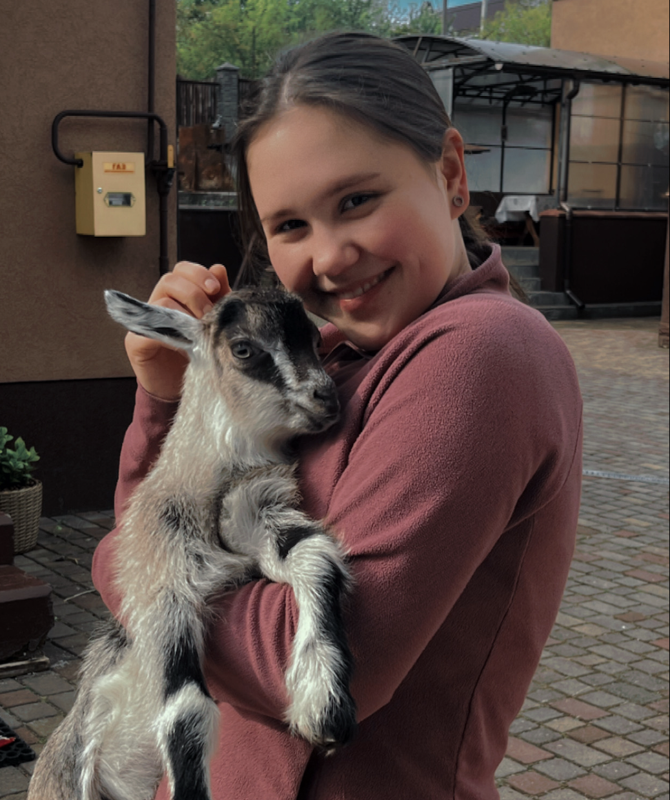

Qui suis-je?

Je m’appelle Yuliia, je suis d’origine ukrainienne.
Après avoir terminé l’école secondaire, j’ai longtemps hésité quant à mon avenir professionnel. J’ai finalement décidé d’étudier l’informatique et j’ai commencé mes études à l’université.
Cependant, à cause de la guerre, j’ai déménagé en Hongrie, où j’ai travaillé dans une usine avant d’arriver en Belgique.
Au milieu de l’année 2023, je suis venue en Belgique et j’ai commencé une nouvelle vie.
À la fin de la même année, je me suis lancée dans l’apprentissage du français. C’est un défi quotidien, mais je m’investis chaque jour pour m’améliorer et m’intégrer.
L’informatique a toujours fait partie de ma vie, c’est pourquoi j’ai cherché une formation dans ce domaine et j’ai trouvé ce centre, le CF2M.
Actuellement, je suis stagiaire en préformation, et j’essaie de m’intégrer dans la société belge.
Mon objectif aujourd’hui est de devenir développeuse web junior et de construire une carrière stable.
Pour moi, le développement web est un mélange de créativité et de logique. J’aimerais créer des sites et des projets utiles et voir concrètement le résultat de mon travail.
J’aime le développement web parce qu’il permet d’apprendre constamment, de résoudre des problèmes en front-end et back-end, et de progresser professionnellement.